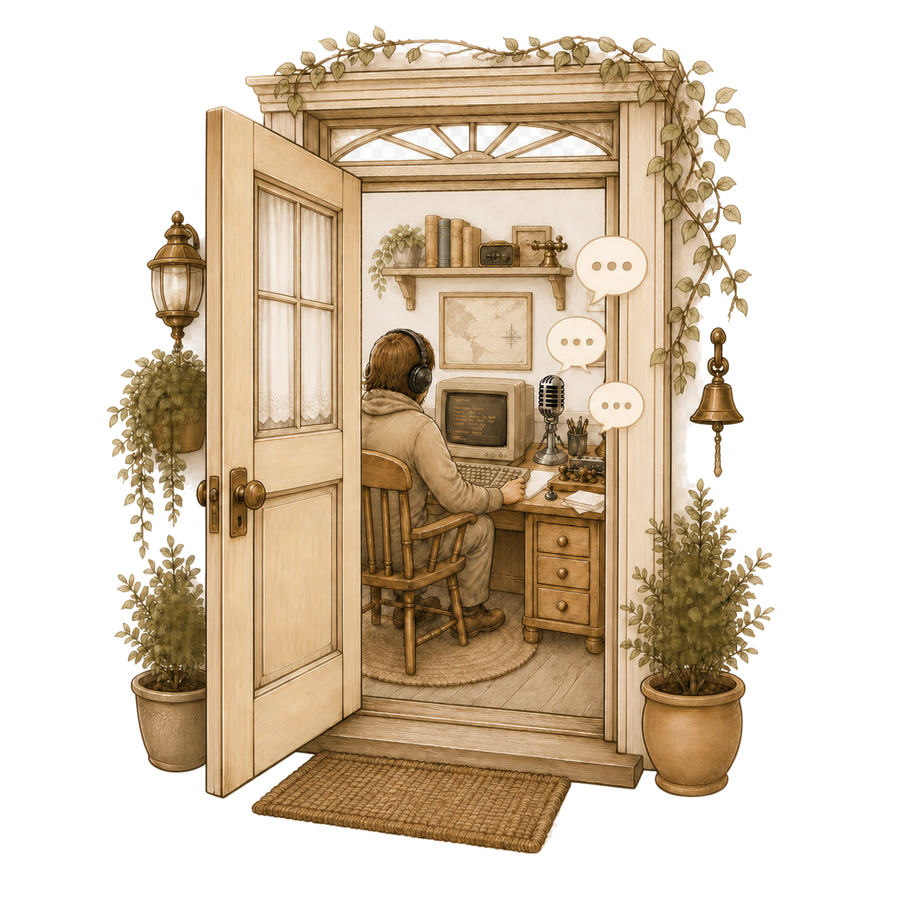

01
Warm Communities
Join the IRC rooms that matter to you and see the people currently sharing the conversation. IRCFriend keeps the focus on community, not advertising.
 IRCFriend
IRCFriend

IRCFriend features
IRCFriend brings the familiar rhythm of IRC to a calm, native Mac experience: connect to the servers you choose, join the rooms you know, and keep the conversation close at hand.
01
Join the IRC rooms that matter to you and see the people currently sharing the conversation. IRCFriend keeps the focus on community, not advertising.
02
Talk in shared rooms or send a private message through the IRC server. Choose a comfortable chat size and theme while your active conversation stays in view.

03
Join channels with familiar IRC commands, follow the current room members, and move between the rooms and servers you choose without a separate account.
04 · Connection care
IRCFriend supports Transport Layer Security (TLS) connections and verifies server certificates by default. TLS protects the connection to the server while it is in use, but IRC messages are not automatically end-to-end encrypted.
05 · File-transfer care
DCC transfers require your explicit acceptance. Received filenames are sanitized, files are saved where you choose, and downloads are not opened automatically by default.
IRCFriend is still in development. Features and wording will be updated as the app approaches release.